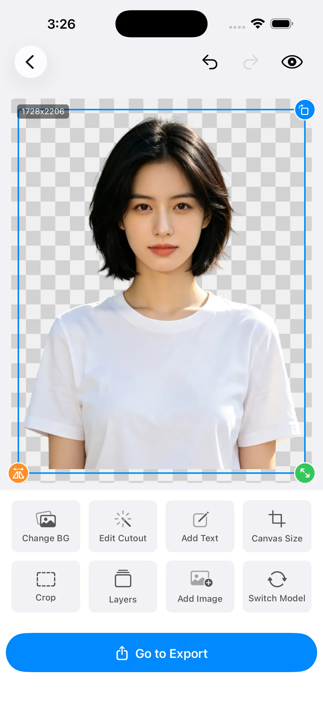

A solid silhouette looks finished no matter how it was made. Loose strands give the game away instantly. Here's why hair defeats background removal, and which controls bring the detail back — all computed on your iPhone, with nothing uploaded.
A clean subject against a plain wall is easy: one side is "in", the other is "out", and a divider between them can be drawn. Hair throws that model away, and understanding exactly why is what lets you fix the result.
Individual flyaways are often two or three pixels across. At that width a single pixel of error is not a small mistake — it is the entire strand. There is barely anything for an edge to lock onto.
A strand is rarely perpendicular to the sensor, and the gaps between strands show the background straight through. So the pixels along the edge are neither pure hair nor pure backdrop — they are a blend of both.
Because those edge pixels mix subject and background, the correct output for them is a semi-transparent alpha value, not a hard in-or-out decision. A model forced to decide "hair" or "not hair" has to guess.
Both failures come from the same forced binary choice. That's why Cutano runs on-device Core ML segmentation with Metal GPU mask refinement and exposes the edge as something you can tune, rather than handing you one fixed decision and walking away.
Once you can name the failure, the fix stops being guesswork. The two problems look opposite, share one root cause, and each points to a different control.
| What you see | What happened | What to reach for |
|---|---|---|
| Chopped, cakey outline | Strands were judged "not hair" and deleted along with the background, so the edge reads as one solid shape. | Feather to soften the boundary, then restore brush the lost strands back. |
| Coloured or grey fringe | The blended edge pixels were kept, and the old backdrop is baked into their semi-transparent colour. | Contract inward to eat the fringe, then re-matte if the colour is strong. |
| Soft but floating strands | Flyaways survived as faint wisps but never settle into the new background. | Add a touch of feather and re-check at export resolution, not preview. |
The point of naming them separately is simple: contraction and feathering pull in opposite directions, so the same slider move that rescues one failure creates the other. Diagnosing first saves a round trip.
These are live, on-device controls sitting on top of the mask, so you see the change as you move them. They are not a re-run of the model — they refine the decision the model already made.
When a coloured halo clings to the outline, nudge the edge inward. Contraction reclaims those contaminated pixels and pulls the boundary back onto the strand, which is the fastest way to kill baked-in backdrop colour.
When the outline looks pasted and hard, feather softens the transition across a few pixels. Retained strands then meet the new background on a gradient instead of a cliff, so they read as hair rather than a sticker edge.
Colour halo you can't get rid of — contract. Sharp, cut-out look — feather. Most finished results need a little of both, applied live and judged by eye at the edge rather than zoomed out.

Different models excel at different subjects — hair, hard product edges, complex backgrounds. When the edge is the whole argument, the model behind it matters, and you shouldn't be locked to the first one that ran.
Fine-strand work is where a second model earns its keep most often. Two good attempts you can compare beat one blind result, and because the whole thing is local you can flip between them as many times as you like.
No model, however good, gets every strand on the first pass. What separates a finished cutout from an almost one is the ability to fix the few it missed without starting over.
On a chopped outline, paint with the restore brush to bring back the specific flyaways the model gave up on, instead of re-running the whole image hoping for a better guess.
On a stubborn patch of leftover backdrop, erase just that region. Local corrections mean you never lose the good edges you already have.
Brushes sit on top of the mask rather than cutting into your photo, and every step is reversible, so experimenting with the edge can't permanently damage the image.
This part isn't a product claim — it's how separation works. A matting model finds the boundary by spotting where the subject stops and the backdrop starts, so the harder those two look alike, the harder the edge is to place.
A busy backdrop is harder for the same reason: texture and colour variety give the model lots of false edges to choose from around the head. Tonal separation between you and the background is worth more than any post-processing step.
This follows straight from the physics at the top of the page. A soft alpha edge is only convincing if there are enough pixels spread across the boundary to hold the transition.
If a strand is a couple of pixels wide, a preview that's been scaled down to fit the screen throws those pixels away before you ever look — which hides edge problems until you zoom in on the real file. Judging the refinement on the actual output, not a shrunken preview, is the only honest way to know it worked.
On Pro, Cutano exports at your photo's original resolution, so the contraction and feathering you set are carried through to the file you ship; the free tier exports at a reduced resolution.
Transparent PNG to keep the soft alpha, JPG, or — on Pro — a layered PSD that survives into a design tool. The edge you tuned is the edge that lands.
Size the canvas and place the subject once the outline is clean, so fine detail survives framing instead of getting trimmed by a careless crop.
None of this is a claim that a bigger file invents detail that was never there. It simply means a hair edge refined at full resolution stays refined in the export — the thing a preview-time downscale would otherwise conceal.
A pet portrait fails for exactly the reasons a person's hair does — only more so. Fur throws longer flyaways, denser gaps that show the background through, and far more individual edges per subject.
Batch helps here too: when you're matting a whole album of a single pet, tiered scheduling with per-item retry means one tricky coat doesn't stall the rest, and you can revisit the individual frames that need another pass.
Free on the App Store. Hair-level matting with live edge control, swappable models, restore brushes and full-resolution export on Pro — all computed on your iPhone.
Download Cutano